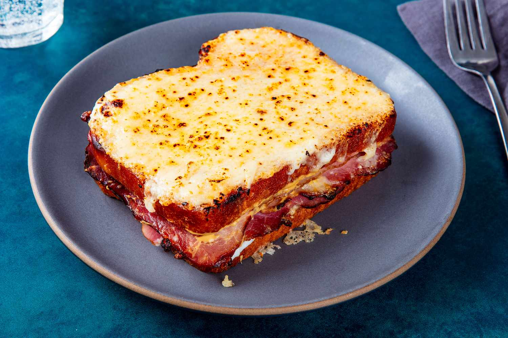

Croque Monsieur

Description
A french classique.
Ingredients
- Slices of bread (2 per croque monsieur)
- Ham
- Cheese (emmental or gruyère work best, but whatever float your boat)
- Mustard
- Butter
- Milk
- Flour
- Nutmeg
- Salt
- Pepper
Instructions
- Make the bechamel. In a pan, make a roux (flour and butter in a 1/1 ratio). Add milk little by little and mix well to avoid chunks.
- Stir regularly until the bechamel has thicken. Add salt, pepper and nutmeg. Set aside.
- Butter the outside of the slices of bread.
- On one slice, spread mustard, add the ham and a slice of cheese.
- Add the other slice on top. Spread a generous amount of bechamel. Add grated cheese to taste.
- Put in the oven for 10 min.
- Serve hot with lettuce on the side. Enjoy!